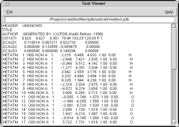

|
This plugin provides a very simple built-in text file viewer and editor for VMD. It can be used by other plugins in place of having to find a platform-specific text editor when one is needed. |

Text Editor Window |
You would first need to get a handle to an instance of the text viewer/editor. There can be many editors open at once, so you can get a handle by doing:
set instancehandle [multitext ?reset|list? ] reset --- Ends instances and deletes all namespaces and instancehandles list --- Returns list of all existing instancehandlesYou can use the returned instancehandle to control the instance:
$instancehandle namespace --Returns the current namespace $instancehandle newfile --Clean out text window and start over $instancehandle openfile 'arg' --Inserts text from arg filename $instancehandle text 'string' --Inserts textstring in arg variable/literal $instancehandle getWindowHandle --Get wm-ready handle, useful for Binding $instancehandle quit --Destroy the instance, delete all data etcExamples:
package require multitext ### Get a handle to a specific text editor window set instancehandle [multitext ] ### Now we configure the instance # Good for displaying long error messages... $instancehandle text "This is the text" # or # if you want to actually edit contents of a file.. $instancehandle openfile "/tmp/filename.txt" ### Close the instance/destroy window $instancehandle quitIf you want to retrieve the contents of the editor programatically, you can get a window handle which lets you know when the window has been destroyed.